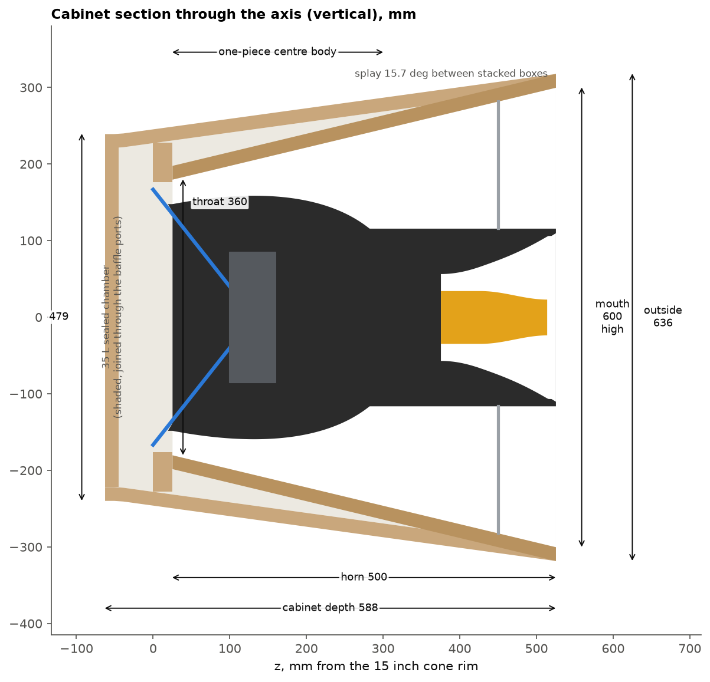
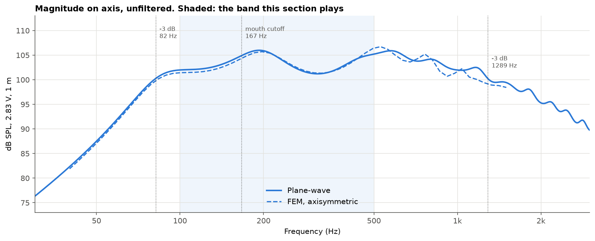
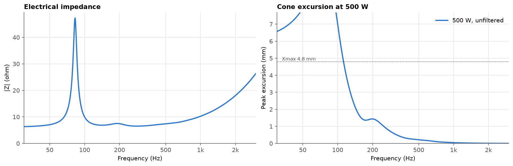
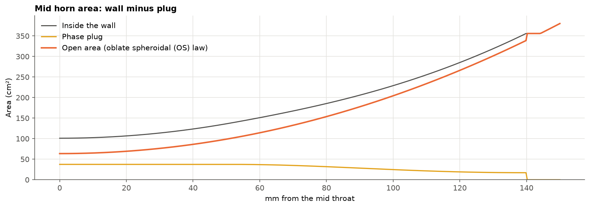
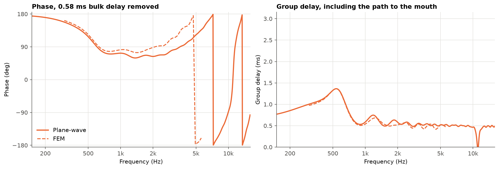
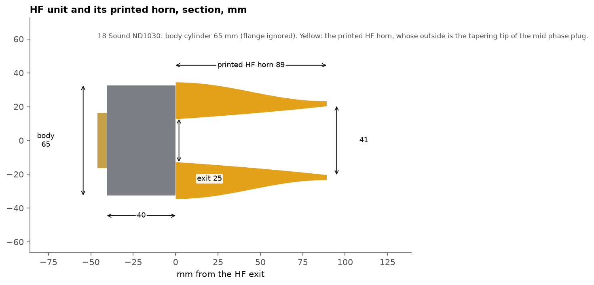
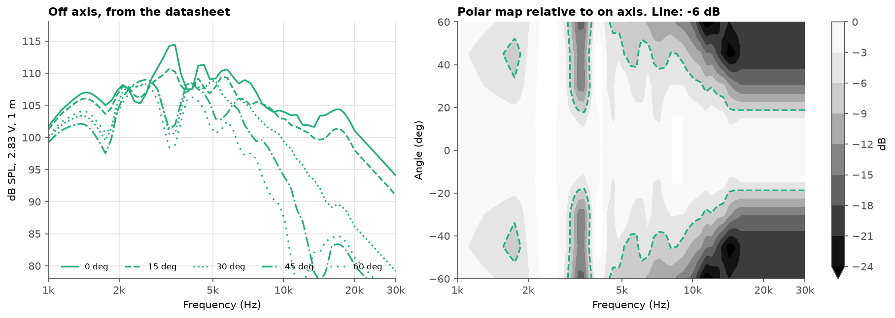
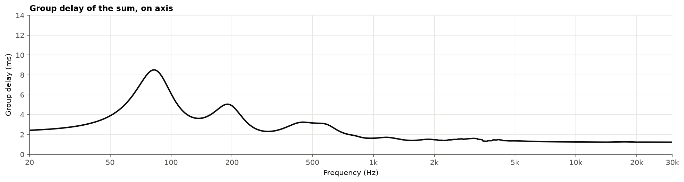

Simulation
Each horn on its own with all its plots, then the full range with its cutoffs. All at 2.83 V, 1 m.
Kick horn · Mid horn · HF · Full range · Method
Kick horn
Eminence DELTA-15LFA in the kick horn: exponential law to the mid can, 2.3:1 throat, 500 mm long, 35 litre sealed chamber. From 80 Hz to 500 Hz: 6.1 dB variation at 103.1 dB. Lower -3 dB at 82 Hz; the mouth cutoff is 167 Hz. FEM agrees within 1.2 dB in band.






Mid horn
Beyma 6MCF200Nd in an oblate spheroidal (OS) horn round the tapering plug: 113 mm throat, 220 mm mouth, 150 mm long. From 500 Hz to 3500 Hz: 3.3 dB variation at 104.9 dB. Lower -3 dB at 430 Hz, upper at 3936 Hz, mouth cutoff 496 Hz. FEM agrees within 0.7 dB in band.






HF
18 Sound ND1030: on-axis response from the datasheet, read by eye to about 2 dB, with minimum phase. Off axis from the FEM of its printed horn mouth inside the mid horn. From 3500 Hz to 16 kHz: 11.7 dB variation at 106.6 dB.

In the FEM, sitting in the mid horn changes the HF's on-axis level by +1.5 dB on average from 3.5 to 16 kHz and narrows it: -4.6 dB at 30 degrees against -3.6 dB for the free piston.




Full range

| Section | Lower -3 dB | Upper -3 dB | Other limit |
|---|---|---|---|
| Kick | 82 Hz | 1289 Hz | Mouth cutoff 167 Hz |
| Mid | 430 Hz | 3936 Hz | Mouth cutoff 496 Hz |
| HF | 1073 Hz | 20058 Hz | Datasheet cutoff 1500 Hz |
| Crossovers | 500 Hz | 3500 Hz | LR4 |
On axis the sum stays within 7.6 dB peak to peak from 100 Hz to 16 kHz (RMS 1.67 dB), before any EQ.

DSP settings
| Channel | Filter | Gain | Delay | Polarity in the model |
|---|---|---|---|---|
| Kick | LR4 low-pass 500 Hz | +0.0 dB | 0.00 ms | Inverted |
| Mid | LR4 high-pass 500 Hz, LR4 low-pass 3500 Hz | -1.7 dB | 0.64 ms | Normal |
| HF | LR4 high-pass 3500 Hz | -2.0 dB | 0.88 ms | Normal |
The reversed 15 inch pulls air out of the horn when wired red to positive, the opposite of the model's convention. Where the table says the kick is normal, invert that DSP channel; where it says inverted, leave it normal.
Without a sub. A +6 dB second-order low shelf at 84 Hz on the kick channel, with a 30 Hz LR4 high-pass, moves -6 dB to 61 Hz. It needs 15.4 mm of excursion at the rated 500 W against 4.8 mm Xmax, so limit the kick channel to about 48 W when the shelf is on.
Method
- Plane-wave horns. Thin annular slices cascaded as transfer matrices, open area = wall minus inner body.
- Drivers. Thiele/Small motors with their sealed volumes and front chambers (cone area times Xmax plus clearance).
- Radiation. Curved-wavefront far field at each mouth.
- FEM. Axisymmetric Helmholtz (dolfinx 0.8) for the kick horn, the mid horn and the HF mouth in the mid horn, in a baffled half-space. Straight-tube check: median 3% error in throat impedance.